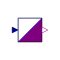

RealToLogicReal to Logic converter |

|
Information
This information is part of the Modelica Standard Library maintained by the Modelica Association.
Conversion of a real input into a digital output without any delay according to:
condition output
first check: input greater upp lupp
second check: input larger low llow
else lmid
If the signal width is greater than 1 this conversion is done for each signal.
Parameters (6)
| n |
Value: Type: Integer Description: Signal width |
|---|---|
| upper_limit |
Value: Type: Real Description: Upper limit |
| lower_limit |
Value: Type: Real Description: Lower limit |
| upper_value |
Value: Type: Logic Description: Output if input > upper_limit |
| lower_value |
Value: Type: Logic Description: Output if input < lower_limit |
| middle_value |
Value: Type: Logic Description: Output else |
Connectors (2)
| x |
Type: RealInput[n] |
|
|---|---|---|
| y |
Type: DigitalOutput[n] |